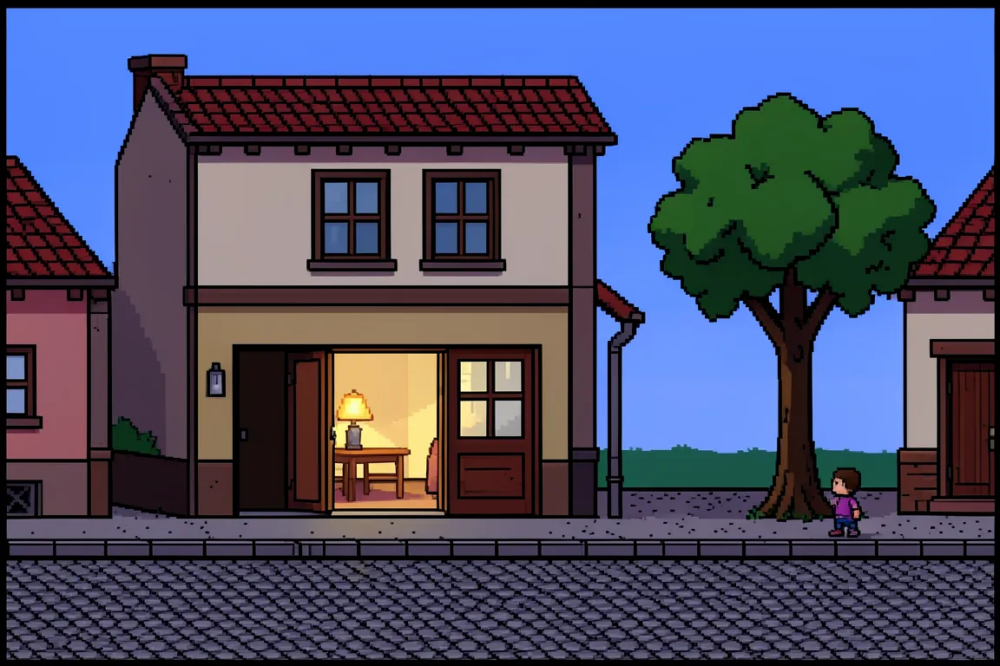

игры · 1983–1992 · также: 8-битный пиксель-арт, Графика эпохи NES, Внешний вид консолей третьего поколения
Мир, сложенный из тайлов 8×8 пикселей на экране 256×240, по 3 цвета плюс прозрачность на спрайт и фиксированная аппаратная палитра примерно из 54 цветов. Чёрные контуры и плоские заливки превращают каждый дом и дерево в маленькую иконку.

Главная идея
Малая сетка и малая палитра заставляют каждый объект принять самый ясный силуэт, поэтому дом из 16 пикселей читается сразу.
Принципы дизайна
Стройте любой фон из тайлов 8×8 или 16×16, повторяющихся по сетке.
Давайте каждому спрайту 3 цвета плюс прозрачный; обводите его чёрным или тёмным оттенком.
Берите плоские заливки; объём показывайте одной строкой света и одной строкой тени, никогда градиентом.
Держите экран 256×240 пикселей и увеличивайте с жёсткими краями методом ближайшего соседа.
Рисуйте небо одним плоским цветом, чаще голубым или чёрным.
Делайте персонажа высотой 16–32 пикселя с крупной головой.
Антипаттерны
Плавные градиенты или сглаженные края
Больше 4 цветов в одной области 16×16
Субпиксельная детализация или фильтрованное масштабирование